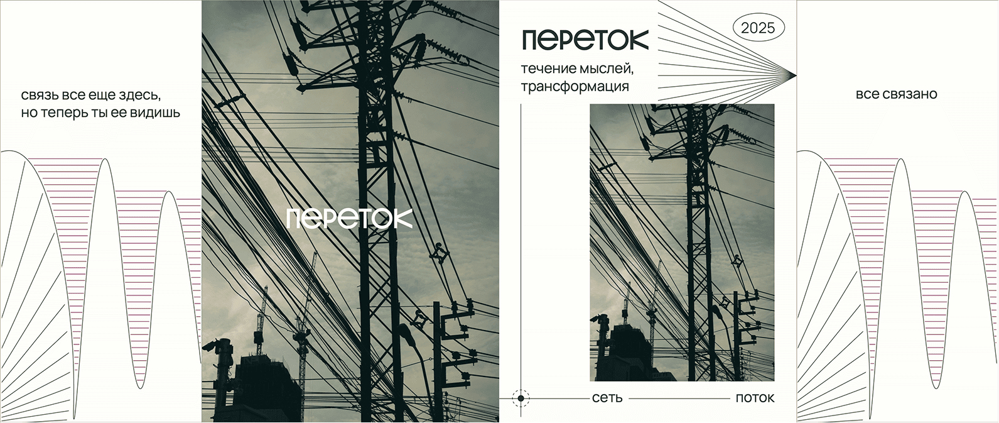
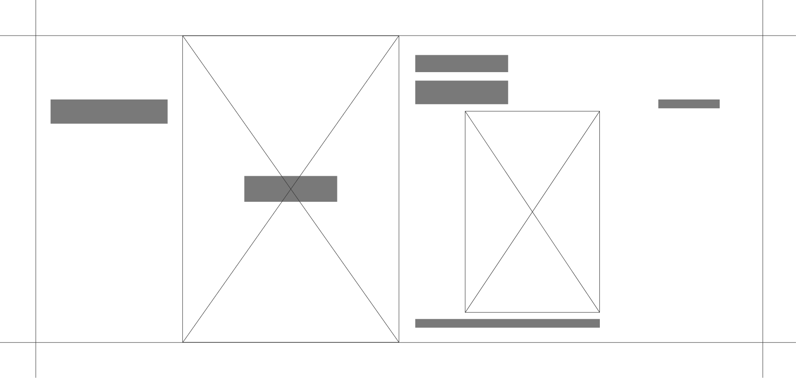
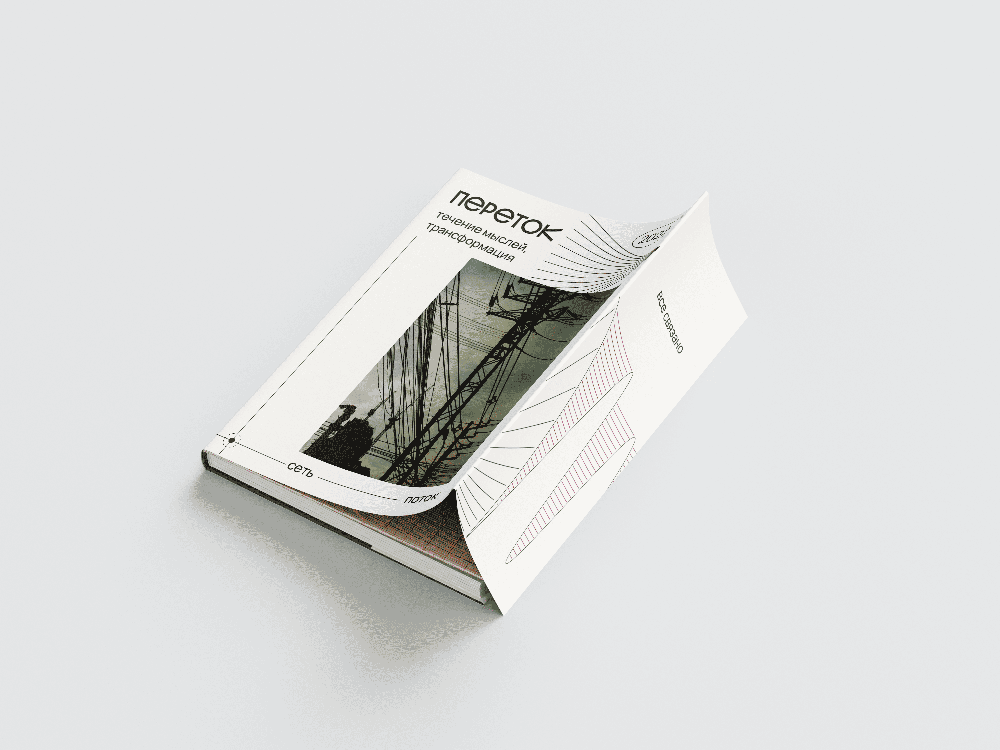

Зин исследует невидимые сети, которые окружают нас в повседневности, но чаще остаются незамеченными. Название «Переток» столо ключевой метафорой движения тока и перетикание информации по цифровым каналам
[супер-обложка]
Супер-обложка иллюстрирует путь от непонимания невидимых сетей вокруг нас к их осознанию
Начало задаёт первая фраза: «Все связано» Конец пути раскрывает фраза: «Связь все еще здесь, но теперь ты ее видишь»


0.1 макет супер обложки

Для создания визуала я отсканировала аналоговые носители информации: фактуры фольги, меди, телефонных проводов и миллиметровой бумаги